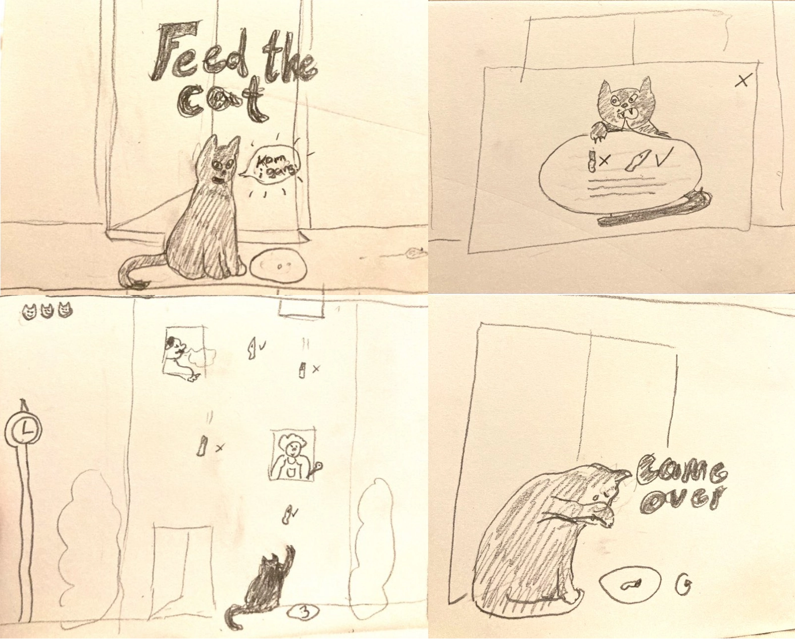

ANIMATION
SPIL
I dette tema lærte vi at designe og kode vores eget spil. I starten af temaet havde jeg lært at lave en række animationer ved hjælp af keyframes i css. Nogle af animationerne brugte jeg senere i spillet. Vi blev introduceret til at bruge javascript og lærte at bruge, funktioner, eventlisteners og events: Click, animationend, animationiterarion og meget mere.
Før jeg kom igang med kodningen, havde jeg udarbejdet det visuelle look til startskærm gamescreen, instruks, slutskærm og et godt og dårligt element. Dette gjorde jeg udefra crazy8 skitser, som jeg rentegnede og lagde ind i illustrator til at illustrere udefra. Jeg fandt ikke en klar reference at gå ud fra, men jeg ville gerne have en semi realistisk tegnestil til mit spil, dog med nogle overdrivelser for at gøre tegningerne mere levende. Jeg eksporterede mine illustrationer som svg filer så de kunne skaleres i alle størrelser. Alle illustrationer blev herefter implementeret i spillets kode.
Jeg lavede et aktivitetsdiagram til mit spil i drawio som hjalp til at kortlægge handlingsforløbet og konsekvenser i spillet. Da jeg senere gik i gang med at kode i javaScript lavede jeg et tilsvarende et statemachine-diagram til at få et overblik over funktionerne i spillets forløb. Jeg havde dog mange udfordringer med at forstå javascript og fik derfor ikke helt styr på mit statemachine-diagram.
Da spillet var færdig lavede jeg en simpel hjemmeside som skulle indeholde selve spillet Samt dokumentation af processen. Denne lavede jeg på 2 timer da jeg brugte stort set al tiden på at få mit spil færdigt. Jeg har derfor ikke meget at sige om hjemmesiden.

PROCESS
SKITSER
ASSETS

STARTSKÆRM
GAMESCREEN

AKTIVITETSDIAGRAM
WEBSITE
INSTRUKS
SLUTSKÆRM